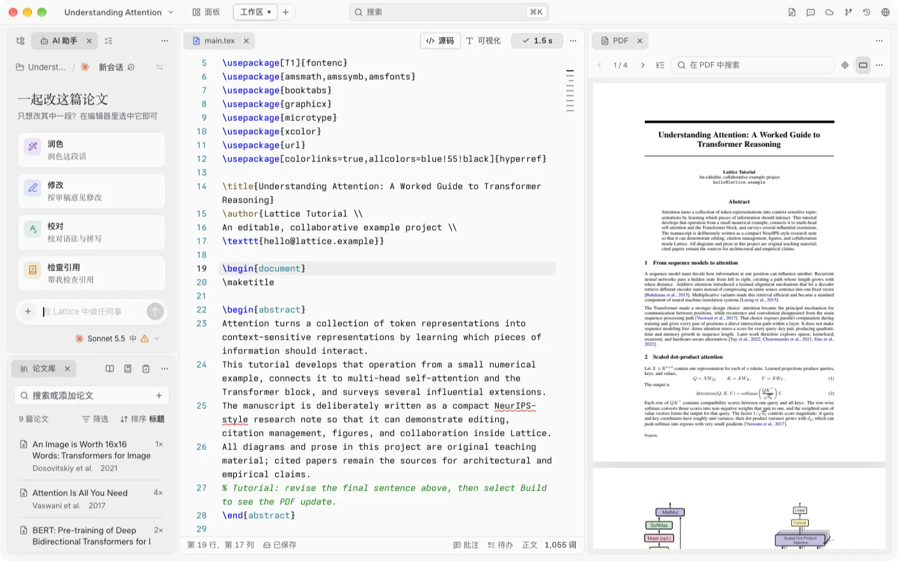

AI 助手
AI 助手面板运行一个编程智能体：它能读你的项目和论文、修复编译错误、修改文件。它做的每处修改都以差异显示，可以审阅或撤回，并记入 历史。Lattice 本身不附带模型或 AI 订阅，需要你自己提供。
接入助手
打开 AI 助手 面板（⌘⌥3），然后选择一种方式：
- Mac 上以你的身份登录的 Claude Code 或 Codex。安装命令行工具，在「终端」里登录一次（例如
claude auth login），再在输入框下方的模型菜单中选中它。 - 你安装的 其他智能体命令行工具，例如 Cursor、OpenCode 或 Droid。
- 你自己的 API：设置 › AI 助手 › 模型接口 填入 兼容 OpenAI 或 兼容 Anthropic 的地址（更多协议 里还有其他协议）、密钥（保存在钥匙串中）和 要使用的模型；测试连接 可以检查是否可用。助手通过 Pi 使用这个接口，Pi 需要一次性下载（约 150 MB），在 设置 › AI 助手 › 模型 中安装；不需要安装命令行工具。校对、润色和修改请求只有在你于 模型 中把接口的某个模型选为校对模型之后才会使用它。
设置 › AI 助手 里的其他页面：
- 模型 设置默认的服务商，以及 Lattice 自己做小任务（校对、提交说明、修复编译）时用的模型。
- 显示 设置助手的字号，范围 11 到 20 px，与编辑器的字号分开。
- MCP 可以给助手添加 Zotero 等工具；技能 管理它能用的技能；用量与限制 显示用了多少。
- 已归档的对话：见 下文。
- 环境变量 显示助手收到的环境变量，来自你的登录 shell 和 macOS 的代理设置；改动后用 重启 AI 助手 让它生效。
模型、MCP、技能、用量与限制和已归档的对话需要先打开一个项目。
使用

- 在输入框写下你的要求，按回车。提到某个文件，它就会去看那个文件。
- 要给消息附上文件，选择 + › 文件和文件夹，或者从访达把文件拖到 AI 助手面板上。任何类型的文件都可以，例如 Word 文档或电子表格；文件只交给助手，不会加入你的项目。
- 润色、修改、校对 和 检查引用 用来启动常见任务。只想改其中一段时，先在编辑器里选中它。
- 在编辑器里选中文字后，可以直接 校对（
⌘⌥P）、润色 或 按指令改写（命令面板里是 按指令改写…），每处修改都附带理由。 - 批注 一段文字（选中，选择 批注，写下要怎么改），再点 保存并立即修改：助手为每条批注提出修改，你在原处接受或拒绝。命令面板里的 根据批注修改 会分轮处理所有未完成的批注。
- 编译失败时，问题上的 交给助手 会把它直接发到这里。
- 面板标题栏的权限菜单决定助手什么时候先问你：从不问我、有风险时问我 或 改外部文件、联网前问我。
- 助手的差异视图中，过长的行会自动换行。差异工具栏上的换行按钮或
⌥Z可以关闭或重新打开换行，Lattice 会记住你的选择。
会话
会话按项目保存；会话名旁边的时钟图标列出之前的会话。设置 › AI 助手 › 已归档的对话 列出已归档的会话（例如闲置一段时间后自动归档的），可以把会话恢复到历史记录，也可以永久删除。
你在经典版本里的会话也会出现。每次助手启动时，都会补上经典版本里它还没有的会话，并用一条简短的提示告诉你带来了多少个。继续这样的会话时，助手的第一次回复会收到它的精简回顾：最近几条消息较详细，较早的消息被缩短，很长的会话会略去最早的部分。经典版本中的工具调用、检查点和会话状态不会带过来。
单独的窗口
点助手面板标题栏上的 在单独窗口中打开（或在命令面板中运行 在单独窗口中打开 AI 助手），助手会移到它自己的窗口里，会话、草稿和正在进行的回复都原样保留。在命令面板中运行 把 AI 助手放回工作区，或关掉这个窗口，它就回到原处。窗口的位置和大小按项目记住，并随项目一起重新打开。